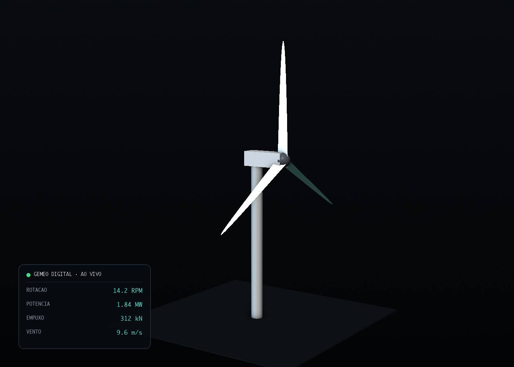

A margem que ninguém sabe quanto sobrou
O projeto foi feito com folga. Ninguém sabe quanto dela já foi consumida pela incrustação.
Trocadores de calor e térmico
Estudo térmico de trocadores, dissipadores e painéis: temperatura no ponto crítico, margem até o limite e quanto tempo a incrustação leva para tirar o processo da faixa — com a incerteza declarada.
Estudos ficam entre 4 e 10 semanas, conforme o escopo. O orçamento é fechado a partir da geometria, do fluido e da pergunta — antes de qualquer conta.

Onde dói
Três dores que trazem um estudo térmico até aqui — e o que o número muda na decisão.
O projeto foi feito com folga. Ninguém sabe quanto dela já foi consumida pela incrustação.
Quando a leitura sai da faixa, a janela de limpeza já passou e a decisão vira emergência.
Montar ensaio térmico para cada geometria custa caro e chega tarde, quando o projeto já foi fechado.
Entra e sai
Sem estes dados o estudo não começa; com eles, o número sai com a faixa de validade declarada.
A prova
O ativo em 3D com a leitura viva ao lado — o formato do gêmeo que acompanha o trocador em operação.
Sete geometrias, um solver 3D e um substituto com 4,46% de erro médio (7,35% no pior caso), dentro da faixa treinada.
Um FNO com 1,7% de erro contra volumes finitos e resíduo de PDE de 0,164 contra o limite de 0,1: o cartão de confiança disse não, e o artigo mostra por quê.
Ler o estudo completo → Relatório de exemplo (PDF) ↗ Relatórios de exemplo →
Prazo e preço
Estudos ficam entre 4 e 10 semanas, conforme o escopo. O orçamento é fechado a partir da geometria, do fluido e da pergunta — antes de qualquer conta.
Entendemos o desafio, os dados disponíveis, as restrições e as métricas de sucesso.
Combinamos simulação, IA e ferramentas de engenharia em um pipeline reproduzível.
Documentamos evidências, incertezas, limites de uso e resultados do projeto.
Outros segmentos
Vamos construir sua solução
Converse com nossa equipe sobre consultoria em Physics AI ou conheça o PINNeAPPle Studio para explorar nossos fluxos de modelagem e verificação.